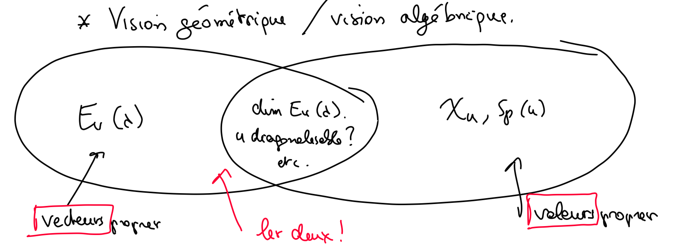

Réductions des endomorphismes
Objectif : Soit \(u \in \mathscr L(E)\), existe-t-il une base \(\mathscr E\) telle que \(\mathrm{Mat}(u, \mathscr E)\) est simple ?
Pivot de Gauss
- Transformer un système q.q. \(\implies\) un autre système qui est triangulaire et est donc facile à résoudre.
- Manipulations : transvections, dilatations et permutations sur les lignes, les colonnes ou les deux, pour que on puisse calculer :
- des déterminants
- résolution d'un système linéaire
- rang d'une matrice
- recherche du noyau, et de l'image
Notations : Pour un \(\mathrm{M}_{n,p}(\mathbb K)\), on a \(E_{k,e} = [\delta_{ik}\delta_{je}]_{(i,j)\in [\![1,n]\!],\; \times[\![1,p]\!]}\), donc \(A = \sum_{u,v} a_{u,v} E_{u,v}\).
Transvections
> Démonstration :
> $$
A.T_{k,e}(\lambda) = A+ \lambda.A.E_{k,p} = A+\lambda.\sum_u a_{u,k} E_{u,p}
> $$
> car
> $$
> E_{u,v}E_{k,p} = \left[\sum_{s}\delta_{iu}\delta_{sv}\delta_{sk}\delta_{je}\right] = \delta_{v,k}.E_{u,p}
> $$
Dilatations
- Propriété :
Considérer : \(C_{i,j} = \sum_k A_{i,k}B_{k,j}\)
Permutations
-
Soit \(\sigma \in \Sigma_n\),
-
On va se limiter aux transpositions \((k \; p): i \mapsto k \text{ si } i = p\text{ sinon } p\).
-
Tout \(P_\sigma\) peut s'écrire comme un produit de transvections et de dilatations.
-
Tout permutation est un produit de transpositions
Preuve : \(P_\sigma .P_{\sigma'} = \left[ \sum_s \delta_{i, \sigma(s)}\delta_{s,\sigma'(j)} \right]= [\delta_{i,\sigma \circ \sigma'(j)}]\)
- Propriétés :
Éléments Propres
Le plus simple forme, c'est \(\mathrm D_n\), car si \(\mathrm{Mat}(u,\mathscr E) = \mathrm{Diag}(\lambda_1,\cdots, \lambda_n) \in \mathrm D_n (\Lambda)\), on a :
Éléments propres (valeurs propres, vecteurs propres, espaces propres, spectre)
-
Définitions : Soit \(E\) un \(\mathbb K\)-espace vectoriel de dimension finie, \(u \in \mathscr L(E)\), \(\lambda \in \mathbb K\), \(e \in E \backslash \{0_E\}\). On dit que quand
- \(\lambda\) est une valeur propre de \(u\) (associé à \(e\))
- \(e\) est une valeur propre de \(u\) (associé à \(u\))
-
Spectre de \(u\), l'ensemble des valeurs propres de \(u\) :
-
Si \(\lambda \in \mathrm{Sp}(u)\), l'espace propre de \(u\) associé à \(\lambda\) est le sous-espace vectoriel de \(E\) :
-
Remarque :
- Un vecteur propre n'est jamais nul.
- \(0_E\) est inclus dans \(E_u(\lambda)\), donc :
-
Généralisation aux matrices carrées :
- Soit \(A \in \mathrm{M}_n(\mathbb K), \;\lambda \in \mathbb R,\; X \in \mathrm M_{n,1} \backslash \{0 _{\mathrm M_{n,1}}\}\), si
On dit que
- \(\lambda\) valeur propre de \(A\), donc de \(u\).
- \(X\) vecteur propre de \(A\) associé à \(\lambda\).
- \(\mathrm{Sp}(A)\) est l'ensemble des valeurs propres de \(A\), \(\mathrm{Sp}(A) = \mathrm{Sp}(u)\)
- \(E_A(\lambda)\) l'espace propre associé, \(E_A(\lambda)=\{\mathrm{Mat}(u, \mathscr C^n),\; x\in E_u (\lambda)\}\)
- Soit \(A \in \mathrm{M}_n(\mathbb K), \;\lambda \in \mathbb R,\; X \in \mathrm M_{n,1} \backslash \{0 _{\mathrm M_{n,1}}\}\), si
On dit que
- Cherchons : en connaisant \(u\in \mathscr{L}(E)\), alors \(\lambda\) ?
Polynome Caractéristique
-
Trouver \(\lambda\) :
-
Polynome Caractéristique de \(u\in \mathscr{L}(E)\) et \(A = \mathrm{Mat}(u, \mathscr{E})\) :
- Propriété :
- \(\chi_u\) est une fonction polynomiale de degré \(n = \mathrm{dim}(E)\).
Preuve :
- Si \(n= \dim(E)\), donc car une fonction polynomiale de degré \(n\) a au plus \(n\) racines.
- \(\lambda\) est une valeur propre de \(u\) si, et seulement si, \(\chi_u(\lambda)=0\), c'est-à-dire,
- \(\chi_u\) est une fonction polynomiale de degré \(n = \mathrm{dim}(E)\).
- Propriété :
- Cherchons : en connaisant \(u\in \mathscr{L}(E)\) et \(\lambda\), alors \(E_u(\lambda)\) ?
Résoudre les vecteurs propres...
-
Soit \(\lambda \in \mathrm{Sp}(u)\),
-
Théorème : Soit \((\lambda_1,\cdots,\lambda_p) \in \mathrm{Sp}(u)^p\) 2 à 2 distinct, alors
Preuve : Soit \((x_1,\ldots,x_p) \in E_u(\lambda_1) \times E_u(\lambda_p)\), \(x_1+x_2+\dots+x_p = 0\). On construit : Enfin, sachant que le déterminant de la matrice de Vandermonde vaut \(\prod_{j,i}(\lambda_j - \lambda_i)\), il existe une unique solution, qui est \((0, \cdots, 0)\)
-
Remarque : La dimension de \(\mathrm{Sp}(u)\) est importante !
-
Bilan :
-
La difficulité majeure : Savoir si la question est algébrique ou géométrique.
-
Liens entre les deux visions
- Points Communs :
- \(E_A(\lambda)\) ? On peut calculer \(A.X = \lambda.X\)
- \(\mathrm{dim} E_A(\lambda)\) ? On peut calculer \(\mathrm{rg}(A-\lambda.I_n) = n - \dim E_A(\lambda)\)
- \(\mathrm{Sp}(\lambda)\) ? On doit résoudre \(\mathrm{det}(A- \lambda.I_n) = 0\)
- Points Communs :

-
Théorème de d'Alembert, Factorisation de Gauss
-
Théorème de d'Alembert : Si \(P\) une fonction polynomiale de degré \(n\) dans \(\mathbb{C}\),
- \(\left( \lambda_1, \ldots, \lambda_k \right)\in \mathbb{C}^s\) distinct 2 à 2.
- \(K \in \mathbb C^*\)
-
Factorisation de Gauss 将复数转化为实数 : dans \(\mathbb{R}\), si \(P\) une fonction polynomiale de degré \(n\), où \((s,t)\in \mathbb{N}^2,\; \Lambda \in \mathbb{R}^s,\; (\alpha_1, \cdots, \alpha_t, \beta_1, \cdots, \beta_t) \in \mathbb{R}^{2t}\)
- Remarque :
- Si \(\lambda \in \mathbb{C},\; P(\lambda) = 0\), alora comme \(P\) est réel, \(f(\overline{\lambda})=0\) où \(f = \sum_{k=0}^n a_k.(x \mapsto x^k)\), \(K \in \mathbb R^*\).
-
Exemple : \(P = X^3-1\), les racines sont \(1,j,j^2\) où \(j= e^{2i\pi/ 3}\)
- Dans \(\mathbb{C}\) : \(P= (X-1)(X-j)(X-j^2)\)
- Dans \(\mathbb{R}\) : \(P = (X-1)(X^2-(j+j^2)X+ j.j^2) = (X-1)(X^2+X+1)\)
- Remarque :
-
Algorithme : \(A \in \mathrm{M}_n(\mathbb{K)}\),
- \(\chi_A\) on le calcule
- On factorise \(\chi_A\) dans \(\mathbb{K}\) (Mais on ne sait pas comment faire en général !!)
- Les racines sont les \(\lambda_1,\cdots,\lambda_s\)
Multiplicité
-
Multiplicité d'une valeur propre : Si \(\lambda \in \mathrm{Sp}(u)\) racine de \(P=\chi_u\) de multiplicité \(\alpha\), alors
C'est-à-dire,
-
Proposition : Soit \(u, \lambda\), alors
- Remarque Importante : On n'a pas plus d'information. On ne sait pas précisément le rang de l'endomorphisme ou la matrice.
-
Cas sympathique :
-
Proposition :
-
Exemple : \(E,\; \dim E=2\), \(u\) est une rotation d'angle \(\theta\).
-
Soit \(B\) une base orthonormée de \(E\), constitué de \((e_1,e_2)\).
-
On passe dans \(\mathbb{C}\), soit \(\lambda \in \mathbb{C}\). On va chercher les espaces propres.
- Si \(P \ne 0\), donc \(\mathrm{rg}(A- \lambda I_2) =2\), \(\lambda \not \in \mathrm{Sp}(u)\).
- Si \(P = 0\), donc \(\mathrm{rg}(A - \lambda I_2 ) =1\), \(\lambda \in \mathrm{Sp}(u),\; \dim E_u(\lambda) = 1\). On trouve \(\mathrm{Sp}_\mathbb{C}(A) = \{e^{i\theta}, e^{-i\theta}\}\), enfin \(E_A(e^{i\theta}) = \mathrm{Vect}\left(\begin{bmatrix} i \\ 1 \end{bmatrix}\right)\) et \(E_A(e^{-i\theta}) = \mathrm{Vect}\left(\begin{bmatrix} -i \\ 1 \end{bmatrix}\right)\)
-
-
Rappel : Si \(u \in \mathscr{L}(E,F)\), le rang :
-
Définition
-
Théorème du rang (voir le théorème de factorisation)
- Équivalence des matrices : ils représentent la même application linéaire, c'est-à-dire, pour \((\mathscr{E}_1, \mathscr{E}_2, \mathscr{F}_1,\mathscr{F_2}),u\in \mathscr{L}(E,F)\), Théorème :
-
Diagnoalisation
Polynôme scindé
-
Définition : On dit que \(P \in \mathbb R[x]\) est scindé s'il s'écrit :
- \(\lambda_j\) est distinct 2 à 2.
Exemple : \(X^2 - aX + b\) scindé ssi \(a^2- 4b \ge 0\)
Endomorphisme diagonalisable
-
Définition : On dit que \(u\) est un endomorphisme diagonalisable si :
-
Autrement dit, \(u\) peut se diagonaliser dans la base de vecteurs propres.
-
Propriété :
-
Caractérisation des endomorphisme diagonalisables :